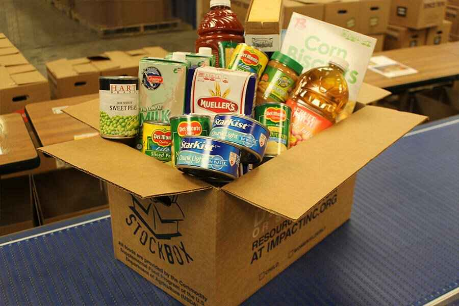

About
Cornucopia is a nonprofit organization dedicated to nourishing
communities by providing wholesome meals to those in need. With a firm
belief that no one should ever go hungry, we work tirelessly to
distribute nutritious food to individuals and families facing food
insecurity. Our mission is simple yet profound: to create a world where
every person has access to the nourishment they need to thrive. Through
our network of volunteers, partners, and supporters, we strive to make a
tangible difference in the lives of those struggling with hunger.
